Cio za Github
Cuprins
De unde și până unde
Github este un site pe care poți încărca codul tău. Fix același lucru îl facem când încărcăm ceva pe drive, sau pe moodle (întâi, desigur, punem în pdf).
Cred că e evident de ce e bine să încarci undeva codul, dar dacă nu, imaginează-ți că într-o zi îți ia foc casa sau cineva îți fură laptopul. Pa pa laboratoare, teme pentru acasă, lucruri individuale… Pricolina, nu-i așa?
Ei bine, asta nu-i tot. Github mai are încă o fișkă:
Fișka
Colaborarea. Încarci codul tău. Oricine poate să se uite la el, să se pricalească de cât de greșit e, sau să se închine la cât de frumos și elegant e. Oricine poate, de asemenea, să ia codul tău greșit și urât, și să-l transforme într-unul ciotkii, să-ți arate ție ce a schimbat, și, dacă crezi că e mai bine - poți accepta schimbările, și codul tău vechi se unește cu cel nou al cuiva.
Fișka numărul 2
Ok. Cineva a schimbat ceva în „mai bine”. Ție ți-a fost cam lene să te uiți peste cod, așa că pur și simplu ai acceptat schimbările. A doua zi, încerci să pornești programul, dar el nu merge. Da ieri mergea. Ce-i de făcut? Ei bine, github are grijă și de această situație. Fiecare schimbare acceptată este salvată în istorie, și poți liber să-ți întorci programul la starea la care a fost ieri (ceea ce nu poți face pe drive, de exemplu).
Cui trebuie să îmi vând sufletul pentru această maghie?
Github-ul este în un lucru complex. Sunt o mulțime de lucruri pe care le poți face, o grămadă de lucruri de învățat și vseo takoe. 90% din timp, însă, vei folosi 3-4 comenzi, sau, dacă folosești versiunea cu interfață grafică, vapșe nici o comandă - pur și simplu vei da click pe niște butone. De asta, o să scriu aici doar despre esențialul esențial. Restul se găsește foarte ușor pe google, youtube…
Începutul
Notă: mai jos sunt instrucțiunile pentru crearea unei repozitorii prin terminal/comandline/командная строка, și nu pentru Github Desktop. Procesul e mai mult sau mai puțin același, dar recomand măcar să încreci să repeți procesul pe terminal, chiar dacă mai apoi vei prefera să folosești Github Desktop.
În primul rând, intri pe github.com și îți faci un cont. Fiecare utilizator are repozitoriile sale. O repozitorie e ca o mapă pe google drive, doar că e formată din cod. Defapt, poți încărca pdf-uri și pe github, doar că nu e sens s-o faci (nu are sens să pui codul în pdf, și după să-l încarci, asta am în vedere; există momente în care va fi nevoie să încarci pdf-uri).
Pentru a crea o repozitorie, poți intra pe pagina principală > profilul tău > Your repositories > New. Îți va apărea așa o fereastră.
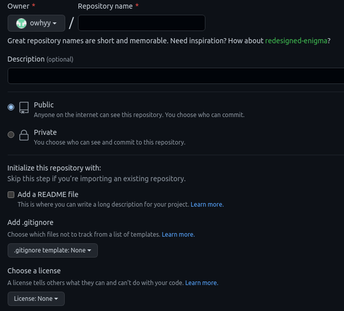
Fiecare repository are structura numeleprofilului/numelerepozitoriului. De aici îl poți alege. De asemenea, poți adăuga o mică descriere, poți face repository-ul public sau privat, poți adăuga un README (tot un fel de descriere), un .gitignore (explic mai târziu) sau o licență (n-am folosit asta vreodată, dar poate fi folositoare în proiecte mai mari).
Acum va apărea așa o fereastră:

Initializarea unei repozitorii
Putem inițializa o repozitorie prin 2 moduri. O să le arăt pe ambele. Procesul(de adăugare a fișierelor) e același pentru ambele. Singura diferență este că folosim git clone atunci când încă nu avem nici un fișier (dacă facem un repository pentru un proiect nou, dar pe care încă nu l-am început, de exemplu), în timp ce git init e folosit când avem deja mapa cu fișierele (dacă vrem să adăugăm toate laboratoarele din mapa /laboratoare/, de exemplu; putem), și, în general, întâi inițializăm, după aceea creăm repository-ul pe github.com, în timp ce cu clonarea e invers.
git clone
Repozitoria e creată, rămâne doar să adaugi fișiere. Asta se face într-un mod foarte intuitiv: ai o mapă pe calculator, în care adaugi fișiere. Această „mapă” o obții scriind următoarea comandă în terminal:
git clone https://github.com/owhyy/denumirea_repozitoriei
Asta o sa cloneze (copie, downloadeze) repozitoria într-o mapă cu denumirea repository-ului tău. Dacă în ea deja existau fișiere, asta o să le descarce și pe ele. git clone este una din comenzile de bază pe care o să le folosim, mai ales atunci când vrem să copiem fișierele dintr-un repository pe un alt calculator.
git init
Dacă deja avem o mapă, e mai eficient să inițializăm un repository direct în ea. Desigur, putem folosi git clone și să copiem toate fișierele în mapa clonată, dar asta e doar o pierdere de timp
Pentru a inițializa, intrăm în mapa cu fișierele pe care vrem să le adăugăm, și scriem git init. Acest lucru va crea un folder ascuns, .git, care va urmări schimbările fișierelor, și ne va permite să facem operațiile descrise mai jos.
SFAT: chiar dacă nu e numaidecât, este bine ca folderul din calculatorul tău care conține repository-ul să aibă același nume ca repository-ul (dacă repository-ul se numește owhyy/sio-zis-brat, folderul trebuie să se numească sio-zis-brat.) Acest lucru va preveni momente de genul cum su*a se numește papka șeia cu laboratoarele mele???.
Adăugarea fișierelor
Fie că am folosit git clone sau git init, procesul de adăugare a fișierelor e același.
Prima oară când creăm un repository, el va fi gol. Hai creem un fișier random. Eu voi adăuga un fisier numit fisier.txt, cu primul vers dintr-o poezie ciotkaia: Молчи, скрывайся и таи, dar tipul, la fel ca și conținutul fișierului nu contează. Acesta poate fi și un fișie .java, unul .cpp etc.
O comandă folositoare pentru a vedea starea folderului/repository-ului nostru local(local înseamnă că e pe calculator, nu pe web) este git status.
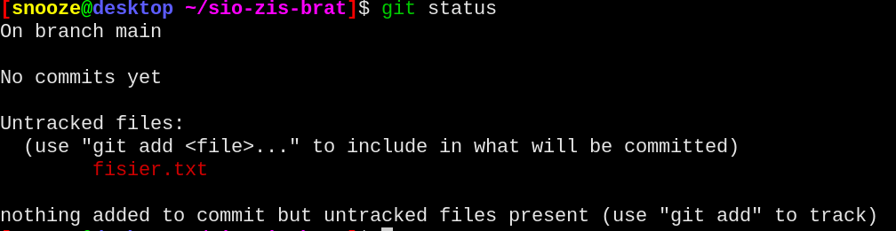
După cum vedem, git-ul ne spune că nu avem fișiere urmărite(untracked), dar că putem folosi git add pentru a adăuga unul din fișierele care sunt în mapă: fisier.txt
Comanda git add îi spune git-ului că a apărut o schimbare/un fișier nou, pe care vrem să-l adăugăm. De fiecare dată când modificăm un fișier, va trebui să îl adăugăm cu git add. Pentru că fișierul meu se numește fisier.txt, eu o să scriu git add fisier.txt. Dacă nu apare nici o eroare, înseamnă că totul a fost bine. Dacă scriem iar git status, vedem următorul lucru:
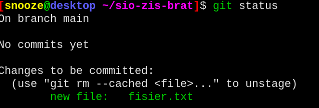
Dacă s-a schimbat în verde, înseamnă că am făcut totul cum trebuie.
SFAT: Dacă am adăugat un fișier care nu trebuia adăugat, putem folosi git rm --cached pentru a-l șterge (șterge înseamnă aici a nu urmări; flag-ul --cached nu o să șteargă fișierul din mapă, ci doar din git).
Commit-urile
Pasul următor este memorarea stării fișierelor. Până când, noi doar am adăugat fișierele la urmărire (adică acum, sistemul git va analiza schimbările din fișierele adăugate). Pentru a memora conținutul unui fișier la momentul actual, vom folosi comanda git commit.
Fiecare commit trebuie să aibă un mesaj. El poate fi orice vrem noi, doar că ar fi bine ca commit-urile să reprezinte anume ce schimbări s-au făcut, pentru a ști, atunci când e cazul, ce schimbări trebuie reversate (la ce trebuie să facem undo, în cazul în care ceva nu merge).
SFAT: git commit va deschide un editor text, pentru a scrie mesajul. Eu recomand folosirea flag-ului -m, pentru a-l specifica deodată.
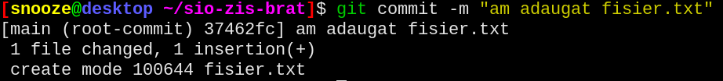
Nakoneț-to
Ultimul lucru pe care trebuie să-l facem este să publicăm acest commit. Pentru asta, folosim comanda git push -u origin main.

ATENȚIE: dacă ai inițializat cu git init, înainte de git push... trebuie să scrii git branch -M main și git remote add origin git@github.com:nume_utilizator/nume_repository.git, unde nume_utilizator e numele tău de utilizator, iar nume_repository - numele repository-ului. N-o să explic aici ce e aia un branch (google it), dar comanda a 2-a pur și simplu face legătura între folderul de pe calculatorul tău și cel de pe github.com.
Dacă dăm un refresh la pagina de github, vedem următorul lucru: 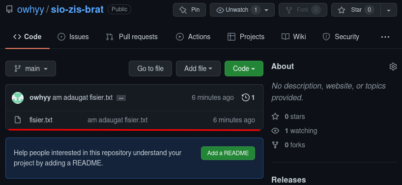
A dalișe șto?
Mai departe, totul e simplu. O să demonstrez procesul de modificare a fișierului fisier.txt, și cum adaug eu fișiere, prin exemplul unui laborator nou la programare.
Modificarea fișierelor
Cum am menționat, git commit salvează conținutul unui fișier la un anumit moment în timp. Acest lucru e destul de greu de înțeles în cuvinte, de aceea o să îl demonstrez în imagini.
Dacă, de exemplu, vreau să adaug următorul vers din poezie în fișierul meu fisier.txt, și să-l adaug pe github, cum fac?
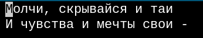
Faptul că am modificat în fișier n-o să modifice automat pe github. Hai, radi interesa să folosim iar git status:
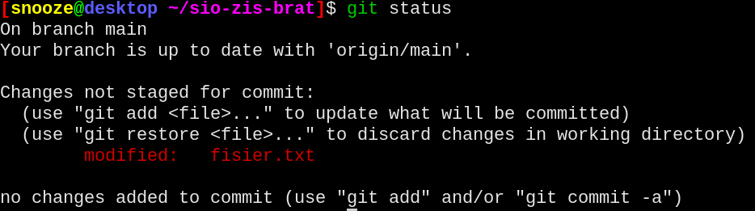
Vedem iar ceva cu roșu, doar că de data asta e modified: fisier.txt, și nu added: fisier.txt, ca înainte. Asta nu contează, fiindcă procesul e fix același.
git add fisier.txtgit commit -m "am adaugat al doilea vers"git push -u origin main
Rezultatul? 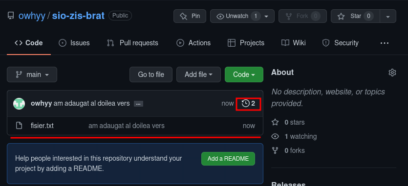
Atrageți atenție la ceasul cu săgeată și numărul 2. Dacă dăm click, putem vedea istoricul commit-urilor. 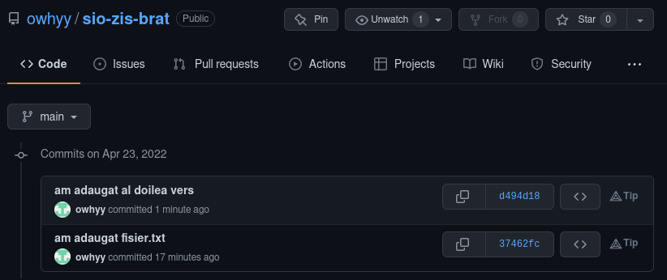
Dacă dăm click pe comentariu (am adaugat fisier.txt sau celalalt), ni se deschide un fel de editor, în care putem vedea ce s-a adăugat, modificat, si în care putem adăuga comentarii la diferite rânduri ale codului. 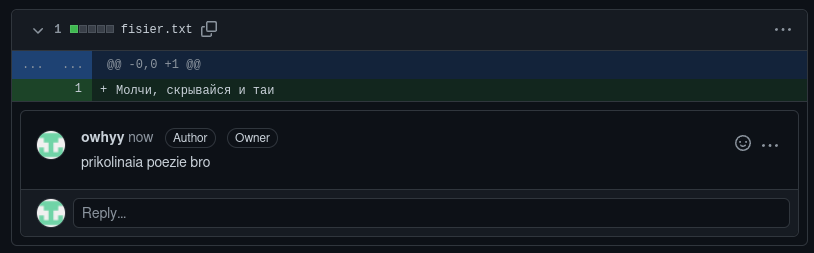
Adăugarea fișierelor noi
Am terminat un laborator la programare, și vreau să-l adaug pe github. Cum fac? O să demonstrez acest lucru în repository-ul meu cu laboratoare și codul de la școală, numit school-code (nu vă grăbiți să-l căutați, e privat 😘).
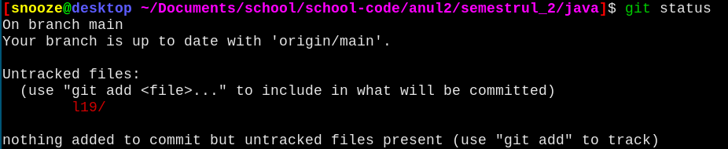
Lucru important
Eu scriu codul în Intellij IDEA. Intellij IDEA adaugă multe fișiere, pe care le folosește. De asemenea, ea pune build-urile (codul compilat de java) în mapa out/. Pe mine, însă, mă interesează doar ceea ce se află în mapa src/, adică doar ceea ce ține de cod, și fișierul credite.txt.
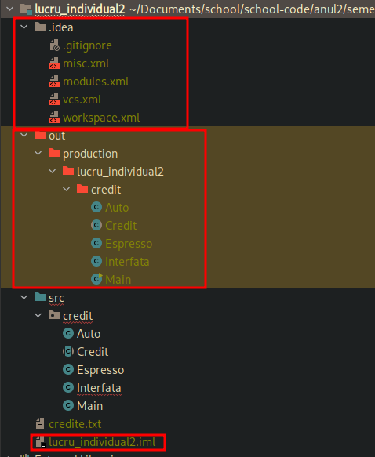
În mod normal, git add lucru_individual2 va adăuga toate fișierele din mapa git add lucru_individual2. Desigur, am putea face ceva ca git add lucru_individual2/src/credit și git add lucru_individual2/credite.txt, dar asta este - fiți de acord, tak sebe.
De asta, oamenii care au făcut git-ul, s-au gândit la un mod de a rezolva această incomoditate: .gitignore. .gitignore este un fișier ascuns (fișierele care încep cu punct(.) sunt ascunse în sistemele unix), pe care îl punem în mapa noastră, și care are rolul de a ignora anumite fișiere.
Aici e fișierul meu .gitignore, pe care îl folosesc din anul 1:
* !*/ !*.c !*.h !*.cpp !*.in !*.out !*.txt !*.pas !*.java !README.md
Puteți să vă uitați la modelul meu, și să adăugați sau ștergeți extensiile de care nu aveți nevoie. Cum funcționează la mine este că el ignoră tot (*), în afară de (!) mape (/) sau toate fișierele cu extensiile (*.c, *.h, *.cpp…), și de fișierul README.md. Acest lucru va face încă un lucru tare ciotkii posibil.
Lucru tare ciotkii
Dacă avem o singură mapă l19, putem adăuga toate fișierele care ne interesează cu git add l19. Din moment ce avem .gitignore, asta va adăuga doar fișierele .java. Însă, dacă avem mai multe laboratoare, pe care le-am rezolvat dar pe care am uitat să le adăugăm. Putem, desigur, să le adăugăm pe fiecare în parte, cu git add l10 l11 l12 l13 lxy, dar putem, și mai simplu, să adăugăm toate mapele cu o singură comandă: git add .. Semnul . adaugă toate mapele, toate modificările, mai pe scurt - totul. Eu folosesc acest lucru aproape întotdeauna.
Adăugarea fișierelor noi: continuare
După asta, totul este simplu. E fix același lucru, git commit -m ... și git push -u origin main. Ăsta e tot procesul.
The end
Asta a fost tot ce trebuie să știi pentru a putea adăuga fișiere pe github. Dar asta e numai o mică parte din tot ce înseamnă sistemul git și cum toată asta de folosit. Îți recomand să încerci ceea ce am arătat aici, și să citești mai departe despre ce e asta un branch, ce e asta un merge și despre cum să contriubi la proiecte open-source. De asemenea, informează-te despre git pull. May the force be with you.
P.S. dacă ai găsit vre-o eroare în text sau în cod - deschide un issue (citește și despre asta), sau, dacă pream tare vrei - poți face un PR. Profilul meu de github îl găsești pe pagina principală.